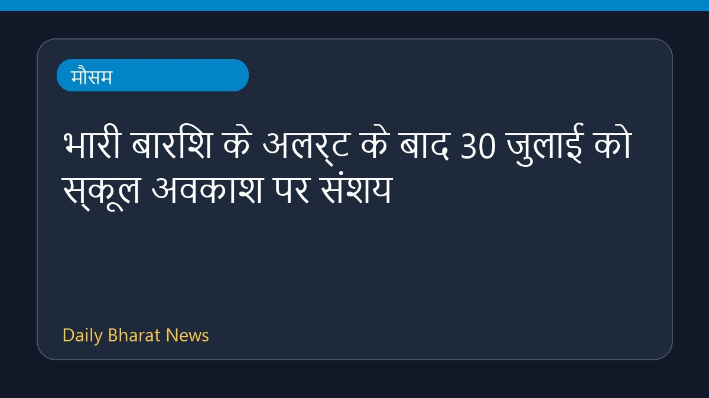

भारी बारिश के अलर्ट के बाद 30 जुलाई को स्कूल अवकाश पर संशय

भारत मौसम विज्ञान विभाग द्वारा कई क्षेत्रों में भारी बारिश का अलर्ट जारी किए जाने के बाद, 30 जुलाई को स्कूलों की छुट्टियों और उनके बंद रहने की संभावना को लेकर खबरें सामने आ रही हैं। हालांकि, इस आरएसएस फीड में दी गई जानकारी बहुत सीमित है और इसके आधार पर यह पूरी तरह स्पष्ट नहीं है कि किन-किन राज्यों या जिलों में आधिकारिक रूप से स्कूल बंद रहेंगे। स्थानीय प्रशासन और संबंधित अधिकारियों द्वारा जारी होने वाले निर्देशों के बाद ही स्थिति पूरी तरह साफ हो सकेगी। अभिभावकों को सलाह दी जाती है कि वे अपने स्थानीय प्रशासन से सटीक जानकारी प्राप्त करें।